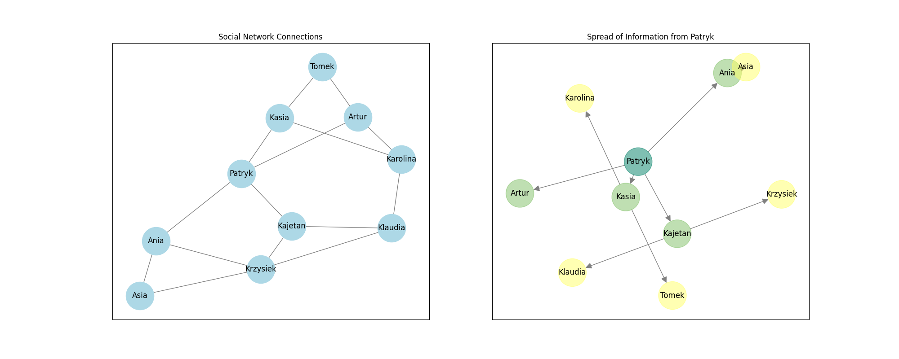

TGiS-BFS Documentation
Welcome to the TGiS-BFS project documentation.
Overview
Application of the BFS algorithm to analyze the spread of information in social networks
Python-based application designed to analyze the spread of information within social networks using the Breadth-First Search (BFS) algorithm. This tool allows users to visualize social network connections and the spread of information from a given starting node.

Features
- Graph Creation: Create social network graphs from a list of nodes and edges.
- Random Community Generation: Generate random community graphs with specified parameters.
- BFS Algorithm: Perform BFS traversal to analyze the spread of information.
- Visualization: Visualize social network connections and the spread of information using Matplotlib.
- Debug Mode: Enable debug mode to print detailed information during the BFS traversal.
Installation
To install the required dependencies, it is recommended to use a virtual environment. Follow the steps below:
Clone the repository:
git clone https://github.com/patrykgacek/TGiS-BFS. git
cd TGiS-BFS
Create and activate a virtual environment:
python -m venv venv
source venv/bin/activate # On Windows use `venv\Scripts\activate`
Install the dependencies:
pip install -r requirements.txt
Usage
Running the Main Script
To run the main script and visualize the social network and information spread, use the following command:
python src/main.py
Running Tests
To run the unit tests, use the following command:
python -m unittest discover -s tests
Example Code
Here is an example of how to use the BfsCommunityGraph class:
from models.bfs_community_graph import BfsCommunityGraph
people = [
"Patryk",
"Kasia",
"Kajetan",
"Ania",
"Artur",
"Karolina",
"Tomek",
"Klaudia",
"Krzysiek",
"Asia",
]
connections = [
("Patryk", "Kasia"),
("Patryk", "Kajetan"),
("Patryk", "Ania"),
("Patryk", "Artur"),
("Kasia", "Karolina"),
("Kasia", "Tomek"),
("Kajetan", "Klaudia"),
("Kajetan", "Krzysiek"),
("Ania", "Asia"),
("Ania", "Krzysiek"),
("Artur", "Karolina"),
("Artur", "Tomek"),
("Karolina", "Klaudia"),
("Klaudia", "Krzysiek"),
("Krzysiek", "Asia"),
]
graph = BfsCommunityGraph(debug=True)
graph.make_graph(people, connections) # creates a graph from a list of people and their connections
order = graph.run() # runs the BFS algorithm
graph.draw_compare() # draws a comparison of the original connections and the spread of information.
graph.draw_compare() # draws the graph of all social connections provided by the user.
graph.draw_spread() # draws the graph of the resulted information spread.
Instead of using make_graph, you can use random_community to generate a sample network, where you can adjust the number of people and the probabilities of connections between them:
graph.random_community(5, 0.4)
This will create a network with 5 individuals, where the probability of a connection between any two individuals is 40% (0.4).